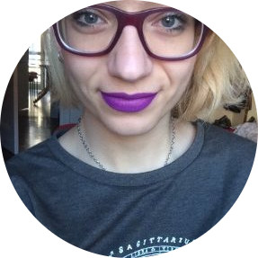
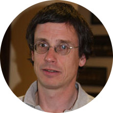
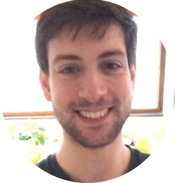

<div class="container marketing">
  <!-- Three columns of text below the carousel -->

  <div class="row">
    <div class="col-lg-3">
      

      <h3>Anler Hernandez Peral</h3>

      <h5>Scala Developer at Fidesmo</h5>

      <p>I'm a self-taught programmer who lacks some theoretical
      background. The Summer School is a golden opportunity for
      people like me to learn how the theory is transformed in
      practical technology. The Summer School is a realy
      eye-opening and mind-expanding experience!</p>
    </div><!-- /.col-lg-4 -->

    <div class="col-lg-3">
      

      <h3>Giulia Frascaria</h3>

      <h5>MSc student</h5>

      <p>I was an undergraduate student in computer science,
      without any knowledge of functional programming. As soon as
      I learned about this opportunity, I knew it was tailored to
      my interest. I love international settings, travel and
      computer science, so what else could I ask? I discovered
      wonderful Utrecht, met excellent professors and assistants,
      networked with people from all over the world and studied
      in a stunning library. You can't miss this!</p>
    </div><!-- /.col-lg-4 -->
    
    <div class="col-lg-3">
      

      <h3>John Leo</h3>

      <h5>Senior Software Engineer at MAANA</h5>

      <p>Utrecht is well-known as one of the top universities in
      the world for functional programming. I had high
      expectations for the school and it surpassed my
      expectations. There was an excellent variety of material on
      advanced Haskell and interesting homework problems which I
      learned a lot by solving. Accommodations were comfortable
      and Utrecht was a wonderful place to explore outside of
      class time.</p>
    </div><!-- /.col-lg-4 -->


    <div class="col-lg-3">
      

      <h3>Martijn Fleuren</h3>

      <h5>MSc student</h5>

      <p>I participated this summer school in 2016, having
      completed a physics bachelor and looking to learn more
      about functional programming. The lectures are fun and
      engaging. During the labs, I discussed with my fellow
      students about potential projects, different ways to tackle
      a problem, which solution is the most beautiful and
      elegant, or even flaws of the language. This, in my
      opinion, is where I learned the most. The summer school
      brought me into contact with many people around the world
      that share my interests. I can highly reccommend this
      course to anyone who wants to improve their knowledge on
      functional programming!</p>
    </div><!-- /.col-lg-4 -->

  </div><!-- /.row -->
</div>

